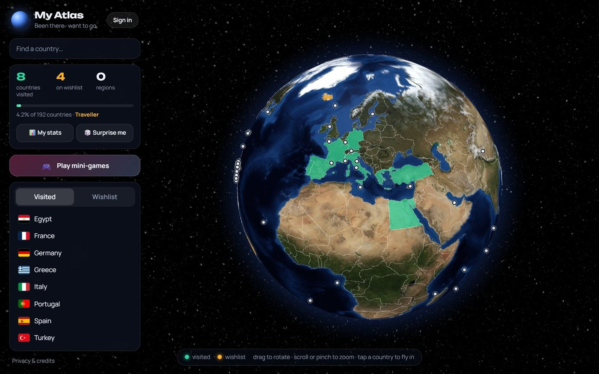
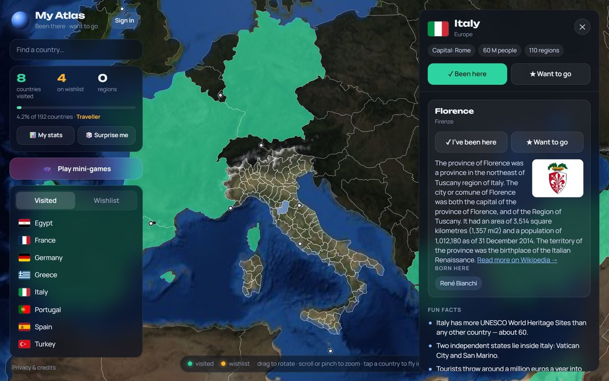
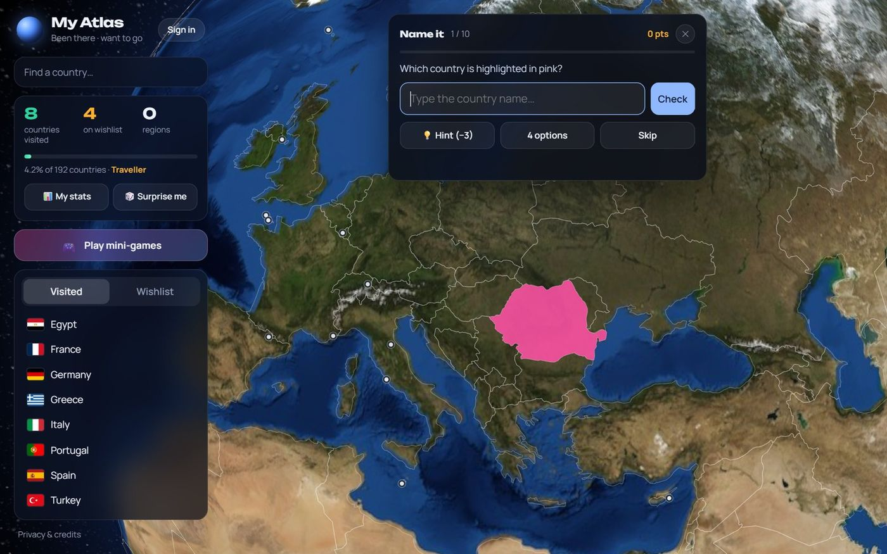
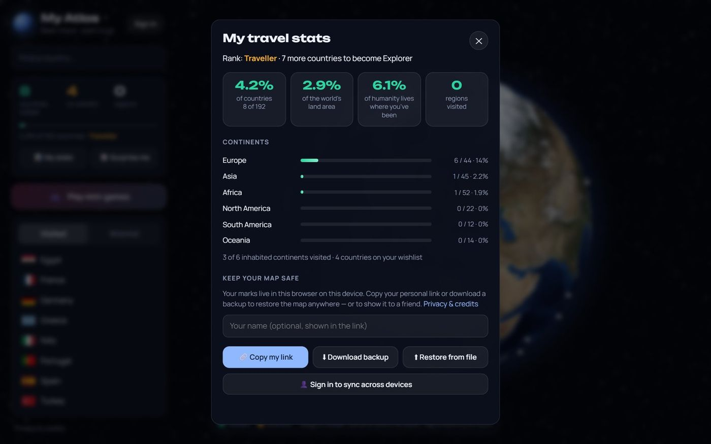
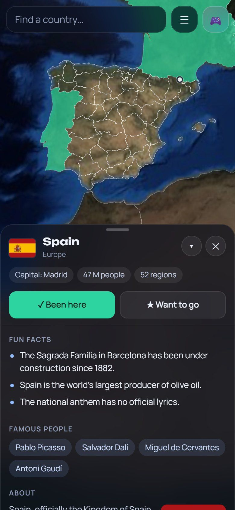

My Atlas
Spin a 3D globe, mark the countries and regions you have visited or want to see, and track how much of the world you have explored.
Einen 3D-Globus drehen, besuchte und geplante Länder und Regionen markieren und verfolgen, wie viel der Welt man schon gesehen hat.





What it doesFunktionsumfang
- Rotate and zoom the globe, click a country to fly in and see its regions; tiny states get tappable pins.
- “Been here” and “want to go” marks for 242 countries and territories and 4,559 regions.
- Facts on hover: hand-written notes for 136 countries, region summaries and famous people live from Wikipedia and Wikidata.
- Travel stats (share of countries, land area and population visited, progress by continent) and three geography mini-games.
- Sign in with Google or email to sync the map across devices; share links and backup files work without an account.
- Globus drehen und zoomen, ein Land anklicken, hineinfliegen und seine Regionen sehen; Kleinststaaten bekommen antippbare Markierungen.
- Markierungen „besucht“ und „geplant“ für 242 Länder und Gebiete und 4.559 Regionen.
- Fakten beim Überfahren: eigene Texte zu 136 Ländern, Regionen und bekannte Personen live aus Wikipedia und Wikidata.
- Reisestatistik (Anteil der Länder, Fläche und Bevölkerung, Fortschritt pro Kontinent) und drei Geografie-Minispiele.
- Anmeldung mit Google oder E-Mail synchronisiert die Karte zwischen Geräten; Teilen per Link und Sicherungsdatei funktioniert auch ohne Konto.
How it worksArchitektur
A static site in vanilla JavaScript: the browser renders the globe with globe.gl on three.js, and Vercel only serves files. Borders come from Natural Earth, simplified with mapshaper; regions load only for the country you open. Supabase handles sign-in and storage: each map is one JSON row in Postgres, and Row Level Security lets users read and write only their own row, so the public key in the page is safe.
Eine statische Website mit Vanilla JavaScript: Der Browser rendert den Globus mit globe.gl auf three.js, Vercel liefert nur Dateien aus. Die Grenzen stammen aus Natural Earth, vereinfacht mit mapshaper; Regionen werden erst beim Öffnen eines Landes geladen. Supabase übernimmt Anmeldung und Speicherung: Jede Karte ist eine JSON-Zeile in Postgres, und Row Level Security erlaubt nur den Zugriff auf die eigene Zeile, sodass der öffentliche Schlüssel in der Seite sicher ist.
HighlightsEntscheidungen
- Performance: rendering cut from about 5,500 draw calls and 90 ms per frame to about 870 draw calls and 5 ms, by fixing polygon winding, dropping micro-islands and skipping hidden faces.
- Touch: a custom tap hit test (screen point → latitude/longitude → point in polygon) makes selection reliable on phones.
- Forgiving game: answers tolerate typos (Levenshtein distance), with four same-continent choices on the last try.
- Sync: changes are saved a moment after the last edit; on first sign-in the local and cloud maps are merged.
- Performance: Rendering von etwa 5.500 Draw Calls und 90 ms pro Frame auf etwa 870 Draw Calls und 5 ms gesenkt: Polygonorientierung korrigiert, Kleinstinseln entfernt, verdeckte Flächen ausgelassen.
- Touch: Ein eigener Treffertest (Bildschirmpunkt → Koordinaten → Punkt im Polygon) macht die Auswahl auf Smartphones zuverlässig.
- Fehlertolerantes Spiel: Antworten dürfen Tippfehler enthalten (Levenshtein-Distanz); beim letzten Versuch gibt es vier Länder desselben Kontinents zur Auswahl.
- Synchronisierung: Änderungen werden kurz nach der letzten Bearbeitung gespeichert; bei der ersten Anmeldung werden lokale und Cloud-Karte zusammengeführt.
Tech stackTechnologien
- Frontend
- Vanilla JavaScript, HTML, CSS — no frameworkVanilla JavaScript, HTML, CSS — ohne Framework
- 3D globe3D-Globus
- globe.gl, three.js (WebGL)
- Map dataKartendaten
- Natural Earth, mapshaper
- FactsFakten
- Wikipedia REST API, Wikidata SPARQL
- AccountsKonten
- Supabase Auth, Postgres with Row Level Security
- Hosting
- Vercel
ScopeProjektgrenzen
A personal project with a public demo. Region descriptions come live from Wikipedia and can be unavailable. Borders follow Natural Earth and are not a statement on disputed territories.
Eigenes Projekt mit öffentlicher Demo. Regionsbeschreibungen kommen live aus Wikipedia und können ausfallen. Die Grenzen folgen Natural Earth und sind keine Aussage zu umstrittenen Gebieten.
The source code is private. I'm happy to walk through it in an interview or a call.
Der Quellcode ist privat. Gern zeige ich ihn in einem Gespräch oder Call.